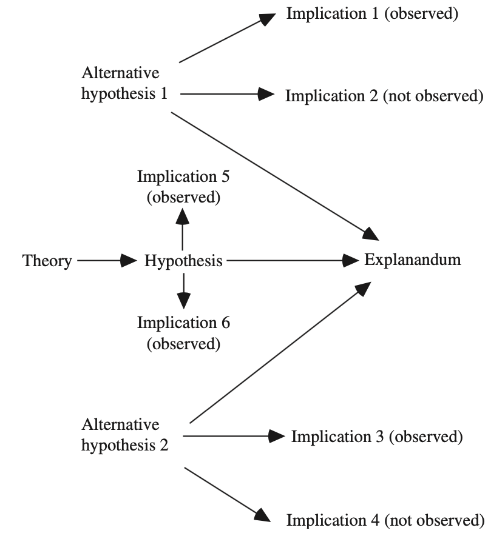

Digital Social Studies
Table of Contents
Syllabus
Description
The Internet and digital technologies are penetrating closer and closer to the centers of social life. A huge layer of human communication is now being captured and stored on the servers of private companies and states, opening up unprecedented opportunities and new questions for the social sciences. How to extract new facts from this environment? How do we build knowledge from "digital material"? What are the limitations of these new possibilities? And how do we overcome them? The course will involve a series of seminars discussing literature and analyzing already published digital data without requiring any special technical knowledge or skills. In the course, students will get hands-on assignments comparing different published results, learning how to analyze them and present their conclusions. The course will demonstrate the richness of Internet data and how they can be used, analyzed, and visualized. Example assignment: Read maps of regions of different countries based on cell phone data, compare them to historical maps and historical regions of these countries (based on Wikipedia) and report on what cell phone data have brought us in this perspective.
Topics
- Digital data and its sources
- The topic reveals the history and context of the emergence of the "digital environment" in social life and the sources of data that it has opened.
- Research in the digital environment
- The topic reveals the methodological features associated with the use of digital data sources in the search for solutions to scientific and applied problems.
- Combining online and offline data
- Methodological and theoretical problems of combining different types of data and ways to overcome them.
- Constructing knowledge with digital data
- Features of theory construction in the context of digital research
- Digital environment as an independent object of research
- The Internet and the social activity of its users as an independent subject of research in the social sciences.
Prerequisites
- No prerequisites required.
Learning objectives
To introduce the field of social digital research, develop the skills to understand the specifics of research in this area, and use this understanding to seek new knowledge.
- Know the requirements and limitations of online research methods.
- Understand the basic idea of other scientists' research and be able to draw. Conclusions from it for your own research.
- Be able to analyze and present research results.
- Be able to find and use digital traces as data for quantitative or qualitative analyses.
- Be able to formulate a research question, and develop analytical skills.
Grading
The course performance will be evaluated based on:
- Mid-Term Presentation (TBA)
- Final Presentation (TBA)
- Final Report (deadline: TBA)
Grading Criteria
- Independence of work (i.e. plagiarism)
- Focus on the theory–research design connection
- Credibility
Seminar report
- Up to 10 pages
- A review or a mini-project
Language
- English
Office hours
- By appointment.
Contacts
- sergei.pashakhin@uni-potsdam.de
Acknowledgements
Initially, this seminar was conceived by Professor Alexandrov. Irina Busurkina and I have contributed to its development and taught it for different audiences. Later, our versions have diverged, and now I hold all responsibility for this particular version of the seminar.
Changelog
- Weeks 4–6 added.
- Added a section on credibility.
- Section 'Vocabulary' is added.
- Weeks 1–3 added. The website is online.
Vocabulary
Data generation process
The data generation process (DGP) is the process that produces the data we have. This concept is more general than the data collection concept. DGP provides us with a useful way to look at the main factors we are studying in the real-world context. Thus, when we think about data collection, our thinking remains limited by the theory and hypotheses we are working with: we decide on what is relevant data for our purposes and what is not. When we think in DGP our thinking incorporates real-world information that may not fit into our theories and hypotheses:
- who is surveying the participants of the study? Can this person introduce biases in the collected responses?
- where the responses were collected (i.e. at home or at work)? Can the place affect the responses our participants give?
Thus, with DGP we think about measurement, bias, and systems that can impact them. In the context of digital social research, by such systems we mostly mean technology:
- what kind of data a website can provide us and what kind of data does it omit from us? For what purposes does a platform (or website) collect these data and how these purposes can diverge from our research purposes?
- what kind of behaviors does the interface of a platform primes its users to exacts (i.e. add suggested friends, import email accounts, use the 'like' button in a certain way)?
Resources:
- ReneBt (https://stats.stackexchange.com/users/195935/renebt), What does a data-generating process (DGP) actually mean?, URL (version: 2020-08-28): https://stats.stackexchange.com/q/451230
- Gary King on DGP – YouTube
The digital
What is the 'digital' in the digital social research? We will frame the answer with the DGP.
First, one should ask: why do we need to introduce the digital / analog distinction at all? One good reason is to highlight the specificity of the data used in such studies. Digital or digital trace data usually are such data that were not generated by a process that is under full control of a researcher (think, an experiment in physics or a survey). These data are found and repurposed for the tasks of research. And this fact disrupts our conventions about measurement.
Second, the 'digital' can serve as a marker of a certain mode of human behavior. The Internet and mobile technologies increasingly become intertwined with our daily life. These technologies mediate, limit and extend outcomes of individual behavior and enable new kinds of behaviors (i.e. texting, online markets and dating). Thus, we can focus on studying the human life that happens 'digitally' and the role that technology plays to enable and influence such life.
Resources:
- Brennen, J. S., & Kreiss, D. (2016). Digitalization. The international encyclopedia of communication theory and philosophy, 1-11. https://doi.org/10.1002/9781118766804.wbiect111
- Hilbert, M. (2015). Digital divide (s). The International Encyclopedia of Digital Communication and Society, 1-7. https://doi.org/10.1002/9781118767771.wbiedcs012
- Melody, W. H. (2015). Mobile Communication Development. The International Encyclopedia of Digital Communication and Society, https://doi.org/10.1002/9781118767771.wbiedcs136
Affordances
The concept of 'affordances' help us to capture a range of phenomena that tend to escape from our attention when we try to understand the role of digital technology in human life. Some behaviors become possible only through technology, and some behaviors could be altered with technology. These changes appearing when technology is a part of the process could be hard to approach. The concept could be a helpful tool when we are describing the DGP.
Affordances are the structure between technology and its user that enables or limits potential outcomes of behavior in a given context (Evans et al., 2017). For instance, going viral on Twitter is only possible on Twitter—a digital platform with specific features that bind its users in a network, ultimately enabling a twit to become viral. Without certain facets of the platform and the effort made by its users such a phenomenon cannot be possible.
Resources:
- Evans, S. K., Pearce, K. E., Vitak, J., & Treem, J. W. (2017). Explicating Affordances: A Conceptual Framework for Understanding Affordances in Communication Research: EXPLICATING AFFORDANCES. Journal of Computer-Mediated Communication, 22(1), 35–52. https://doi.org/10.1111/jcc4.12180
- Bakardjieva, M. (2016). Computer‐Mediated Communication. The International Encyclopedia of Communication Theory and Philosophy, 1-20. https://doi.org/10.1002/9781118766804.wbiect124
- Olesen, M. (2016). Affordance. The International Encyclopedia of Communication Theory and Philosophy, 1-9. https://onlinelibrary.wiley.com/doi/10.1002/9781118766804.wbiect243
- Couldry, N. (2016). Actor‐Network Theory. The International Encyclopedia of Communication Theory and Philosophy, 1-7. https://doi.org/10.1002/9781118766804.wbiect012
On credibility in writing
In this seminar we are learning how to produce knowledge with digital data. It is an ambitious goal for one seminar, and the only way possible to approach it is by learning how to think in writing. To do so we will exercise with our readings by taking a step back from its content and taking a look at its form and internal structure.
The fact of life is that any useful information (a fact, a theory, an argument and so on) exists only before its audience. If you do not tell somebody of what you have learned, it is of no use, really. Moreover, we have to be convincing and our reasons for saying what we want to say should be explicit and considered valid. The obvious example here is your thesis or any other course paper. If your text fails to convince, you earn a lower grade.
I find the following diagram from (Elster, 2015) very stimulating for good thinking and writing.

Resources:
- Elster, J. (2015). Explaining social behavior: More nuts and bolts for the social sciences (Revised edition). Cambridge University Press.
- Jaccard, J., & Jacoby, J. (2019). Theory construction and model-building skills: A practical guide for social scientists. Guilford publications.
Week 1
We start with an overview of what I call "optimists / pessimists" debate about the Internet and big data. Our goal here is to learn on this example how to critically engage with the published research.
Reading
- Hargittai, Eszter, and Christian Sandvig. 2016. “How to Think about Digital Research.” In Digital Research Confidential : The Secrets of Studying Behavior Online, 1–28. MIT Press.
- Chapter 1 in Salganik, Matthew J. 2018. Bit by Bit: Social Research in the Digital Age. Princeton: Princeton University Press. https://www.bitbybitbook.com/en/1st-ed/introduction/
- Chapter 1 in Mayer-Schönberger, V., & Cukier, K. (2013). Big data: A revolution that will transform how we live, work, and think. Houghton Mifflin Harcourt.
Questions for review
- What do the texts say about the scope of our course?
- Where do these accounts contradict each other?
Week 2
On this week, we will discuss how writing is related to research and publishing. We will take a look at two papers and compare their research design and how authors communicate it. The goal here is to show that good writing and good research design support each other in convincing a reader. Thinking about a potential reader before actually collecting data and reporting the results should be natural for us.
- Rykov, Y. G., Meylakhs, P. A., & Sinyavskaya, Y. E. (2017). Network Structure of an AIDS-Denialist Online Community: Identifying Core Members and the Risk Group. American Behavioral Scientist, 61(7), 688–706. https://doi.org/10.1177/0002764217717565
- Stubbs, J. E., Nicklin, L. L., Wilsdon, L., & Lloyd, J. (2022). Investigating the experience of viewing extreme real-world violence online: Naturalistic evidence from an online discussion forum. New Media & Society, 146144482211084. https://doi.org/10.1177/14614448221108451
Week 3
This week, we discuss your paper ideas.
Week 4
This week, we will learn about digital trace data and what is important to keep in mind about it when we consider the data generation process. The goal here is to learn the limitations of the digital trace data.
Reading
- Chapter 2 "Observing behavior" in Salganik, M. J. (2018). Bit by bit: Social research in the digital age. Princeton University Press. (available here https://www.bitbybitbook.com/en/1st-ed/observing-behavior/).
Please, take a close look at “2.3 Ten common characteristics of big data”.
Week 5
We continue discussing paper ideas and relate them to properties of digital trace data. I introduce the matrix method for literature review and discuss strategies for fast and efficient reading of academic papers.
Reading
Chapter 2 “Observing behavior" in Salganik, M. J. (2018). Bit by bit: Social research in the digital age. Princeton University Press. (available here https://www.bitbybitbook.com/en/1st-ed/observing-behavior/).
Please, take a close look at “2.3 Ten common characteristics of big data”.
Week 6
Repurposing found data. How hard can it be? What novel information digital trace data can provide to social sciences?
Reading
- Welles, B. F. (2016). Big Data, Big Problems, Big Opportunities: Using Internet Log Data to Conduct Social Network Analysis Research. In E. Hargittai & C. Sandvig (Eds.), Digital Research Confidential: The Secrets of Studying Behavior Online (pp. 223–242). MIT Press.
- Stephens-Davidowitz, S. (2017, July 9). Everybody lies: How Google search reveals our darkest secrets. The Observer. https://www.theguardian.com/technology/2017/jul/09/everybody-lies-how-google-reveals-darkest-secrets-seth-stephens-davidowitz
Please, consider these question about the reading:
- The data generating process of the Google search data. How can we imagine it? Come up with a research topic using search data and try imagining it. If it is possible consider how search data can be used in your project.
- What are the limitation of these kinds of data?
- What new information such data can give to your project?